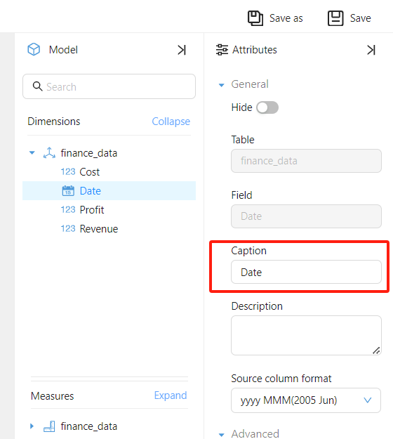

Cross-Model and Cross-Data Source Analysis
Datafor's cross-model and cross-data source analysis feature enables users to integrate data from different sources into a single report, providing comprehensive data analysis and visualization. This functionality helps users associate and compare data across sources, offering deeper analytical insights.
Features
- Multi-Data Source Integration: Users can set up different analysis models for different components within the same report, breaking down data silos and creating a global view.
- Cross-Filtering: Visual components from different analysis models support cross-filtering, enabling users to explore relationships between data from multiple dimensions.
Use Case
Suppose a company wants to integrate financial and sales data to analyze market performance and track key financial metrics. Financial data is stored in an ERP system, while sales data resides in a CRM system. With Datafor's cross-model and cross-data source analysis, the company can visually present sales trends, cost analysis, profitability, and other key insights in a single report. Through cross-analysis, users can uncover potential connections between financial and sales data.
Sample Data
ERP System: Financial Data Table (FinanceData)
| Date | Cost | Revenue | Profit |
|---|---|---|---|
| 2023 Jan | 500,000 | 1,200,000 | 700,000 |
| 2023 Feb | 520,000 | 1,250,000 | 730,000 |
| 2023 Mar | 510,000 | 1,220,000 | 710,000 |
| 2023 Apr | 550,000 | 1,300,000 | 750,000 |
| 2023 May | 560,000 | 1,320,000 | 760,000 |
| 2023 Jun | 590,000 | 1,350,000 | 760,000 |
CRM System: Sales Data Table (SalesData)
| Date | Market Region | Product Category | Sales | Units Sold |
|---|---|---|---|---|
| 2023 Jan | East Region | Electronics | 600,000 | 1,200 |
| 2023 Jan | South Region | Home Goods | 400,000 | 900 |
| 2023 Feb | East Region | Electronics | 620,000 | 1,240 |
| 2023 Feb | South Region | Home Goods | 420,000 | 920 |
| 2023 Mar | East Region | Electronics | 610,000 | 1,230 |
| 2023 Mar | South Region | Home Goods | 410,000 | 910 |
| 2023 Apr | East Region | Electronics | 650,000 | 1,300 |
| 2023 Apr | South Region | Home Goods | 450,000 | 950 |
| 2023 May | East Region | Electronics | 670,000 | 1,340 |
| 2023 May | South Region | Home Goods | 470,000 | 970 |
| 2023 Jun | East Region | Electronics | 690,000 | 1,380 |
| 2023 Jun | South Region | Home Goods | 490,000 | 990 |
Creating Analysis Models
Next, we will create analysis models for two different data sources.
Financial Analysis Model: finance_data
Sales Analysis Model: sales_data

Creating Analysis Reports
Use the finance_data model to create a line chart:
Use the sales_data model to create a bar chart:
Cross-Analysis
In the data report, users can perform multi-dimensional analysis via cross-filtering:
Frequently Asked Questions
Can cross-analysis and filtering be performed when the field names in the two models are different?
Answer: Yes, as long as the field titles in the two models are consistent, cross-analysis can be performed.
Can a filter component using fields from Model A subscribe to a chart component based on Model B?
Answer: Yes. If Model B has fields with the same titles as the filter component, it is possible to filter and perform cross-analysis.